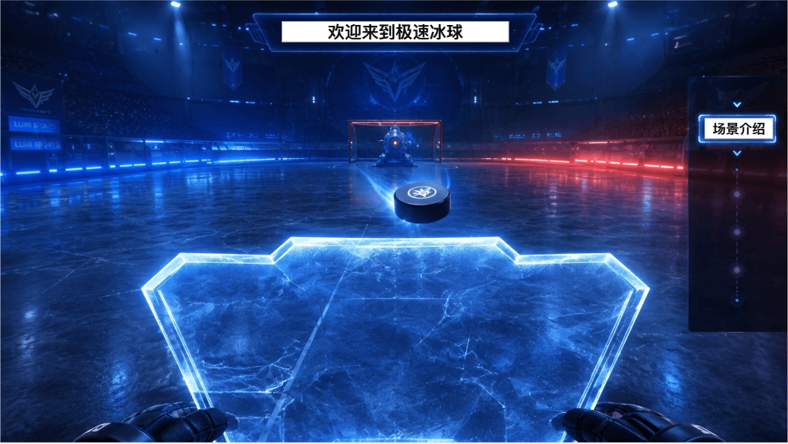
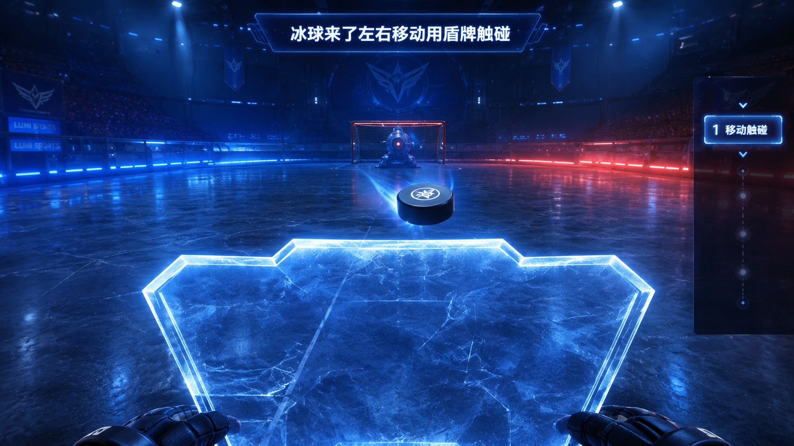
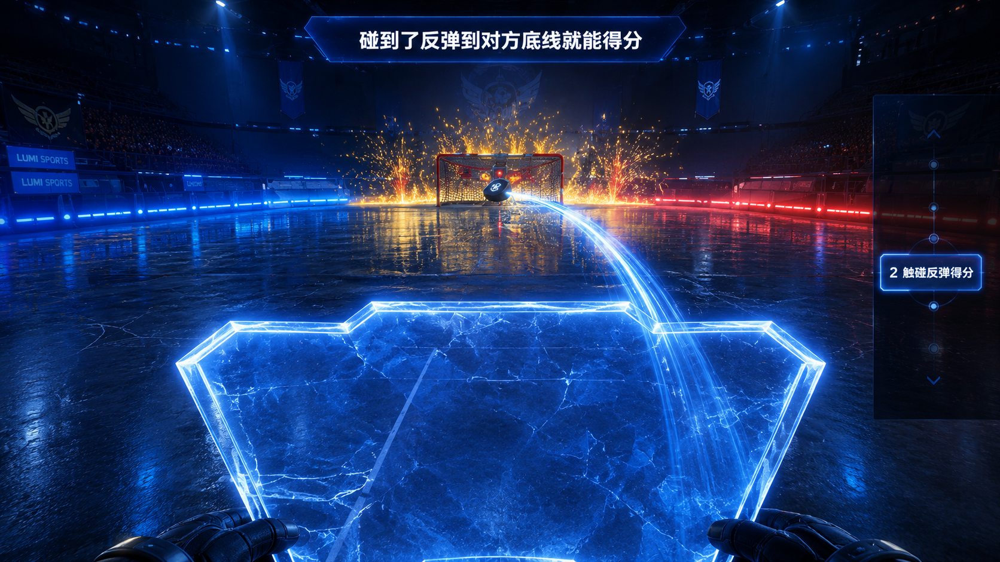
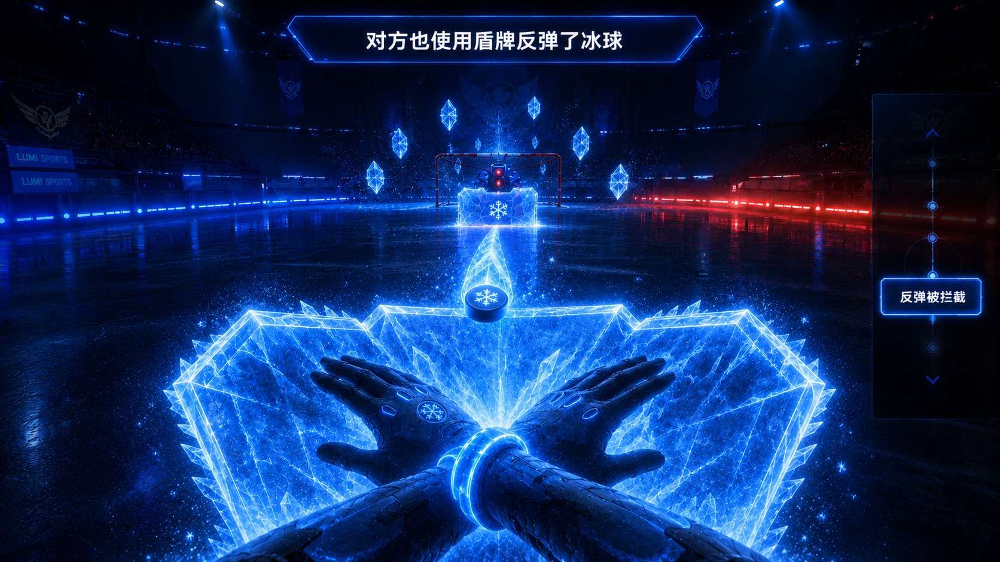
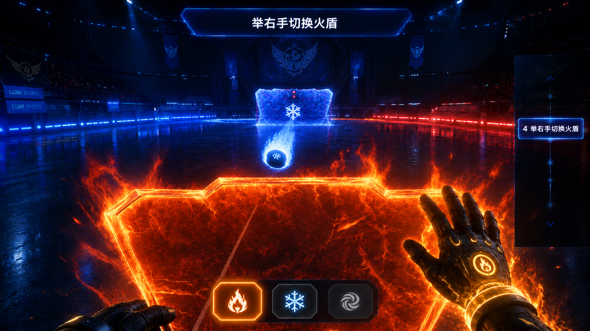
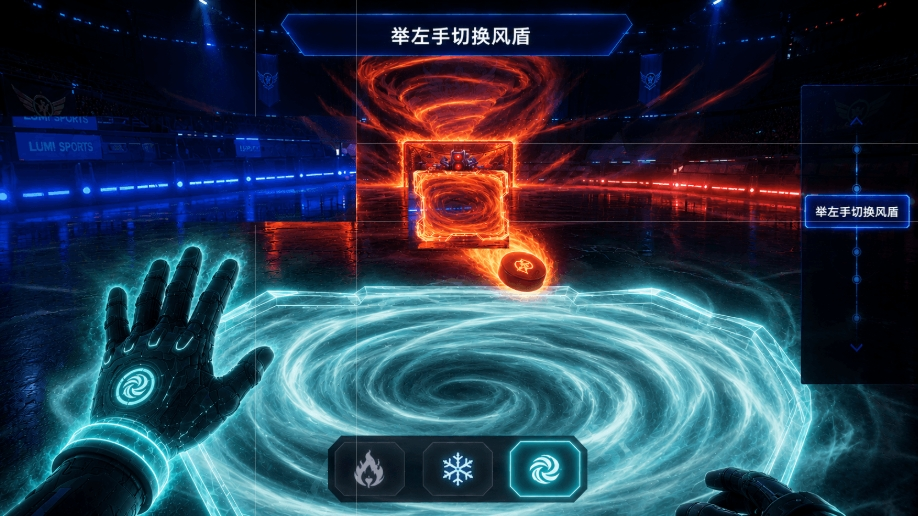
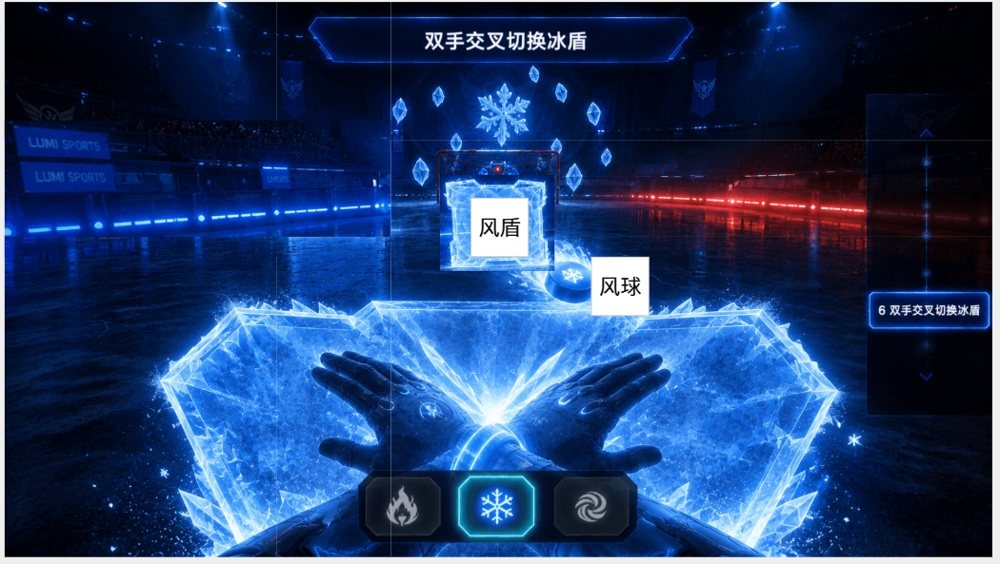

疾速冰球提供两套独立的新手教程，分别对应普通模式与大师模式。大师模式默认玩家已掌握普通模式基础操作，不再重复基础教学，直接进入属性克制系统学习。
| 模式 | 步骤 | 内容 | 前置条件 |
|---|---|---|---|
| 普通 | 4 | 场景介绍 → 移动触碰 → 反弹得分 → 被拦截 | 无 |
| 大师 | 4 | 属性入门 → 🔥火盾 → 💨风盾 → ❄️冰盾 | 默认玩家已通晓普通模式规则（移动、触碰、得分、防守） |




大师模式新手教程独立于普通模式，默认玩家已掌握移动触碰、反弹得分、被拦截等基础操作，直接聚焦于属性克制系统的教学。不再重复普通模式的步骤1~4。
欢迎来到大师模式！你已熟悉冰球的基础操作——移动触碰、反弹得分、防守拦截。现在解锁更进阶的属性克制系统。
三种属性 · 三种手势 · 一个克制循环
🔥 火克冰 举右手切换火盾，克制冰球
💨 风克火 举左手切换风盾，克制火球
❄️ 冰克风 双手交叉切换冰盾，克制风球
用克制属性的盾牌拦截对应来球，即可将球转化为己方属性弹射回去，并获得额外增益。接下来逐个练习！
AI 发射 ❄️冰球。右手举起 → 盾切换为🔥火焰形态。
🔥 火克冰 火盾成功拦截 ❄️冰球时触发克制——冰球被火焰吞噬，转化为 🔥火球 并向对方底线弹射。每拦截 2 颗冰球（即第 2 次成功弹反时），额外生成一颗火球一同射向对方底线。总共需要成功拦截 2 次（即弹反 2 颗冰球）才能通过。

AI 发射 🔥火球。左手举起 → 盾切换为💨风暴形态。
💨 风克火 风盾成功抵挡 🔥火球时触发克制——火球被气流包裹，转化为 💨风球，蓄力 3 秒后以最高速度弹射向对方底线（球体属性从 🔥火 → 💨风）。
成功抵挡 2 次通过。

AI 发射 💨风球。双手交叉 → 盾切换为❄️冰晶形态。
❄️ 冰克风 冰盾成功抵挡 💨风球时触发克制——风球被冻结，转化为 ❄️冰球 并向对方底线弹射，同时额外获得 +1 分（球体属性从 💨风 → ❄️冰，冰球继续飞向对方底线）。
成功抵挡 2 次通过。循环回步骤 1。

| 手势 | 元素 | 高亮位置 |
|---|---|---|
| 举右手 | 🔥火盾 | 右手位置 |
| 举左手 | 💨风盾 | 左手位置 |
| 双手交叉 | ❄️冰盾 | 双手交叉位置 |
| 克制关系 | 触发条件 | 球体转化 | 增益效果 |
|---|---|---|---|
| 🔥 火克冰 | 🔥火盾成功拦截 ❄️冰球 | ❄️冰球 → 🔥火球 | 每拦截 2 颗冰球（第 2 次弹反时），额外生成一颗火球一同向对方底线弹射 |
| ❄️ 冰克风 | ❄️冰盾成功抵挡 💨风球 | 💨风球 → ❄️冰球（反弹） | 冰球向对方底线弹射，并额外获得 +1 分 |
| 💨 风克火 | 💨风盾成功抵挡 🔥火球 | 🔥火球 → 💨风球 | 球体在盾前蓄力 3 秒后以最高速度弹射 |
| 时机 | 右侧面板 |
|---|---|
| 步骤2 | 「🚶移动触碰」高亮，其余隐藏 |
| 步骤2完成 | ✅→消失→步骤3出现 |
| 步骤3完成 | ✅→消失→步骤4出现 |
| 全部完成 | ✅→消失→🎉→循环回步骤2 |
| 时机 | 右侧面板 |
|---|---|
| 步骤1 | 「📖属性入门」高亮，其余隐藏 |
| 步骤1完成 | ✅→消失→步骤2「🔥举右手切换火盾」出现 + 底部手势提示区首次出现 |
| 步骤2完成 | ✅→消失→步骤3「💨举左手切换风盾」出现 |
| 步骤3完成 | ✅→消失→步骤4「❄️双手交叉切换冰盾」出现 |
| 全部完成 | 🎉大师教学完成→循环回步骤1，手势提示区隐藏 |
以下为「疾速冰球」场景介绍及全局 UI 所需的美术资源清单，供美术团队制作参考。VR 第一人称视角，游戏引擎实时渲染风格，整体追求未来科技 + 冰面竞技 + 属性特效的视觉调性。
| 类别 | 资源 | 制作说明 |
|---|---|---|
| 竞技场主体 | 未来科技冰球竞技场 | 长方形冰面赛道，长约 30m、宽约 12m 的比例感，冰面地板晶莹透亮，有细微磨砂纹理和冰裂纹理，两侧边缘各有一条蓝红渐变发光灯带贯穿全场 |
| 竞技场背景 | 暗色场馆空间 | 冰面上方为高挑的暗色场馆穹顶，隐约可见钢结构桁架和灯光阵列；冰面下方有微弱蓝光从底部透出，营造冰下光源感；场馆两侧有半透明能量屏障（类似力场墙），防止冰球飞出界外 |
| 发球机区域 | 银灰色金属发球机 | 位于赛道远端（对方半场底线），银灰色金属外壳，带有蓝色能量指示灯和粒子盘旋效果；大师模式下发球机周围会根据当前属性出现对应粒子——火属性时橙色火焰粒子盘旋、风属性时青白色气旋、冰属性时蓝白冰晶漂浮 |
| 球门底线 | 发光底线 + 球门 | 赛道两端各有一条横向发光底线，待机时白色微光；底线中央各有一个发光球门框，宽度约 2m，门框边缘有金色/蓝色呼吸灯带。冰球碰触底线（含球门两侧区域）→ +1 分，底线爆闪白光；冰球穿过球门 → +10 分，球门爆闪金色光芒 + 金色粒子庆祝 |
| 灯光 | 竞技场照明 | 整体偏暗冷色调照明，冰面为主要光源（底部透光 + 两侧蓝红灯带），上方聚光灯呈阵列排布，色温偏冷（约 5500K），突出冰面反光质感 |
| 类别 | 资源 | 制作说明 |
|---|---|---|
| 冰球 | 基础冰球 | 球形，直径约 20cm，半透明冰蓝色材质，内部有微弱冷光核心，飞行时尾迹为白色冰晶粒子。从发球机发射时带有初始加速度光效 |
| 属性冰球 | 火球 / 风球 / 冰球 | 火球：橙红色包裹，表面火焰粒子燃烧，尾迹为火星+黑烟；风球：青白色气旋包裹，球体有旋转风纹，尾迹为气流涡旋；冰球：深蓝水晶质感，表面霜冻纹理，尾迹为冰晶碎片。三种属性球体大小与基础冰球一致，仅视觉特效不同 |
| 玩家盾牌 | 能量盾牌 | 半透明能量材质，圆形或六边形，直径约 50cm，待机状态为淡蓝色蜂窝网格。正面朝向玩家视角时可见盾牌内表面有微弱 HUD 信息。盾牌随玩家手部移动实时跟随 |
| 属性盾牌 | 火盾 / 风盾 / 冰盾 | 火盾（举右手切换）：盾面变为燃烧的火焰材质，橙红色火焰包裹边缘，蜂窝网格变为火焰纹路；风盾（举左手切换）：盾面变为旋转风暴材质，青白色气旋涡流覆盖，边缘有风刃粒子；冰盾（双手交叉切换）：盾面变为冰蓝色水晶材质，霜冻纹理覆盖，边缘有冰晶尖刺 |
| AI 防守者 | 对方半场 AI 盾牌 | 位于赛道远端球门前，一面大型能量盾牌（约为玩家盾牌 1.5 倍），同样具备属性切换能力（与当前教学步骤的属性对应），用于演示拦截场景 |
| 类别 | 资源 | 制作说明 |
|---|---|---|
| 顶部提示板 | 文字提示板 | 屏幕顶部中央，半透明深色圆角矩形底（80% 不透明黑底 + 冰蓝色微弱描边），白色文字居中。进入场景时从上方滑入 + 淡入动画（约 0.5 秒） |
| 右侧步骤面板 | 垂直步骤列表 | 屏幕右侧纵向排列，仅当前步骤高亮（冰蓝色发光边框 + 文字高亮），其余步骤暗隐。每步完成打 ✅ 并消失，下一步上移 |
| 雷达指示器 | 冰球方向雷达 | 屏幕中下方小型圆形雷达，显示冰球相对玩家的方位和距离，冰球为移动的亮点，距离越近亮点越大越亮 |
| 底部手势提示栏 | 三属性图标 | 大师模式步骤2~4时，屏幕底部出现三个横向排列的图标（🔥火 / 💨风 / ❄️冰），当前需要切换的属性图标高亮脉冲，其余暗隐。玩家做出正确手势后对应图标变绿确认 |
| 得分反馈 | 得分特效 | 冰球触碰底线 → 屏幕弹出 "+1" 白色文字，底线白闪，约 0.5 秒消散；冰球穿过球门 → 屏幕弹出 "+10" 金色文字（配合金色粒子爆发），球门爆闪金光，约 1 秒消散；冰盾克制成功 → 屏幕额外弹出 "+1" 蓝色文字 |
| 类别 | 资源 | 制作说明 |
|---|---|---|
| 触碰反弹 | 碰撞火花 | 冰球撞击盾牌瞬间，碰撞点爆发冰蓝色火花粒子（约 0.3 秒），冰球随即改变方向弹射，弹射轨迹带发光弧线残留 |
| 底线得分 | 撞线白光 + 球门金色庆祝 | 冰球碰触底线 → 底线白闪 + "+1"；冰球穿过球门 → 球门爆闪金色光芒 + 金色粒子向上飞散 + "+10" |
| 拦截碰撞 | 拦截火花 | 冰球被 AI 盾牌拦截时，碰撞点迸发橙红色火花粒子，AI 盾牌短暂高亮闪烁，冰球被弹开消失 |
| 属性克制 | 克制特效 + 球体转化 | 火克冰：❄️冰球撞击🔥火盾瞬间被火焰吞噬，球体从冰蓝色转化为橙红色🔥火球，伴随火焰爆发粒子，火球自动向对方底线弹射；每弹反 2 颗冰球（第 2 次弹反时），额外生成一颗火球一同射出；风克火：🔥火球撞击💨风盾时被气流包裹，球体从橙红色转化为青白色💨风球，周围形成旋转风涡蓄力 3 秒后以最高速度弹出；冰克风：💨风球撞击❄️冰盾瞬间冻结，球体从青白色转化为深蓝冰晶❄️冰球，冰球向对方底线弹射，屏幕弹出 "+1" 额外加分 |
| 手势切换 | 盾牌切换光效 | 玩家做出属性手势时，盾牌从基础形态过渡到属性形态，过渡动画约 0.4 秒：基础盾面粒子消散 → 属性粒子汇聚成形 → 新盾牌稳定发光 |
| 用途 | 色值参考 | 说明 |
|---|---|---|
| 场景主调 | 深蓝黑 #0a1628 ~ #1a2a40 | 竞技场穹顶、背景空间、暗色区域 |
| 冰面 | 冰蓝白 #d6eaf8 ~ #aed6f1 | 冰面地板主色，带底部透光感 |
| 灯带（左蓝） | 蓝 #3498db / #5dade2 | 左侧冰面灯带、冰属性元素 |
| 灯带（右红） | 红 #e74c3c / #ec7063 | 右侧冰面灯带 |
| 火属性 | 橙红→金黄 #e67e22 → #f1c40f | 火球、火盾、火焰粒子特效 |
| 风属性 | 青白 #1abc9c → #d4efdf | 风球、风盾、气旋粒子特效 |
| 冰属性 | 冰蓝 #2980b9 → #d6eaf8 | 冰球、冰盾、冰晶粒子特效 |
| UI 底色 | 半透明黑 rgba(0,0,0,0.8) | 提示板、步骤面板底衬 |
| UI 高亮 | 冰蓝 #3498db 发光 | 当前步骤边框、雷达指示器 |
VR 第一人称视角 + 游戏引擎实时渲染；视觉基调类似《Echo VR》的零重力竞技场氛围 + 赛博轻量级 UI 叠层；冰面反光与属性粒子特效为核心视觉记忆点；三属性（火/风/冰）的色彩对比要鲜明且各自独立可辨；核心设计原则：冰球飞行轨迹清晰可见、属性切换反馈即时明确、不因特效堆叠遮挡玩家视线。